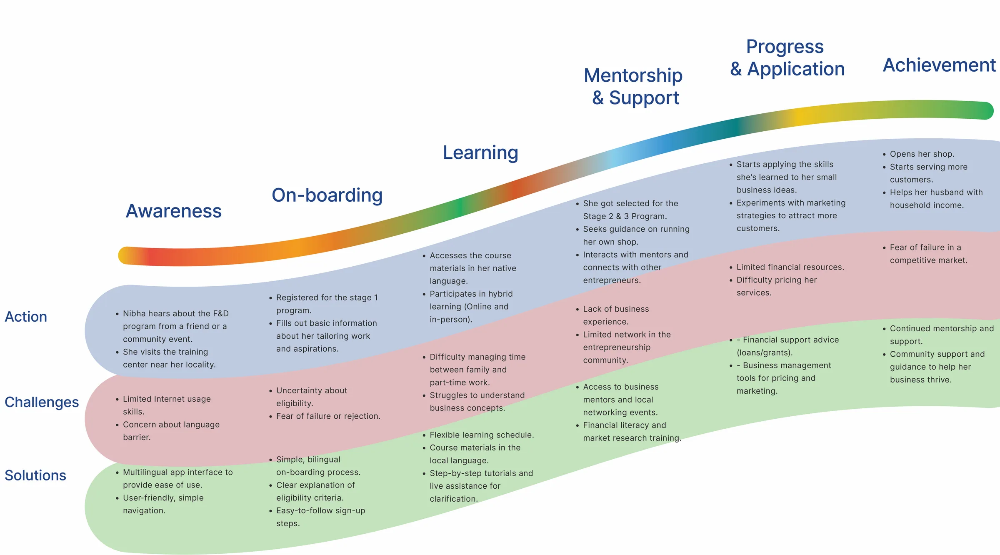
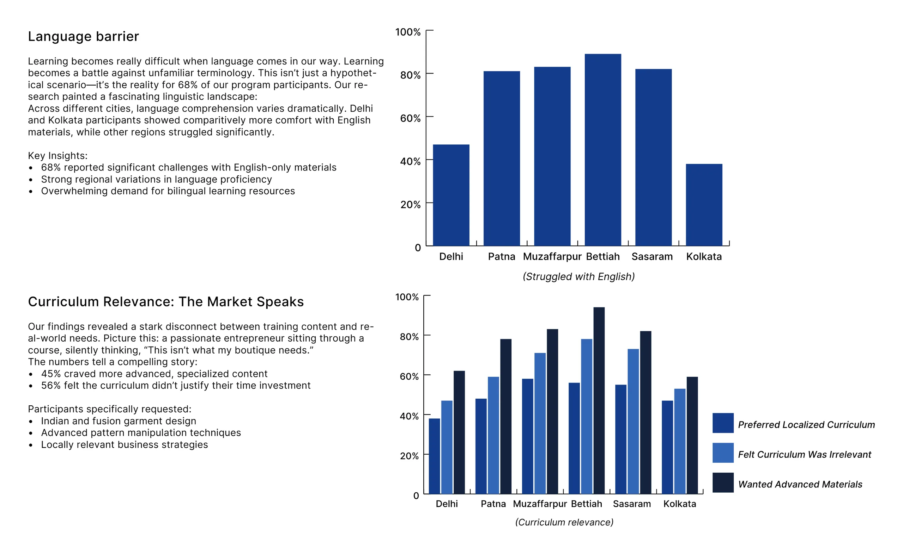
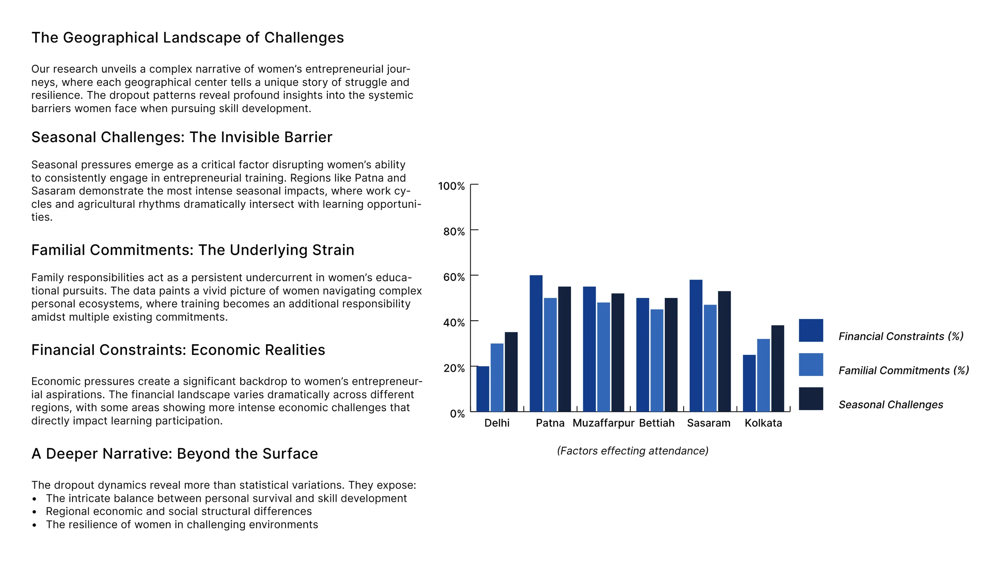
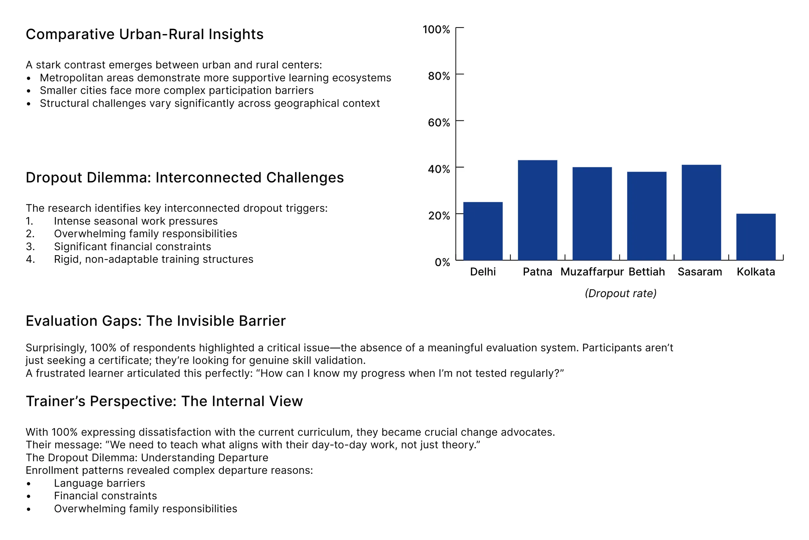
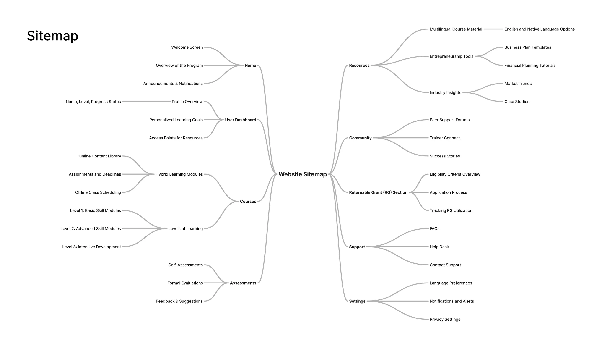
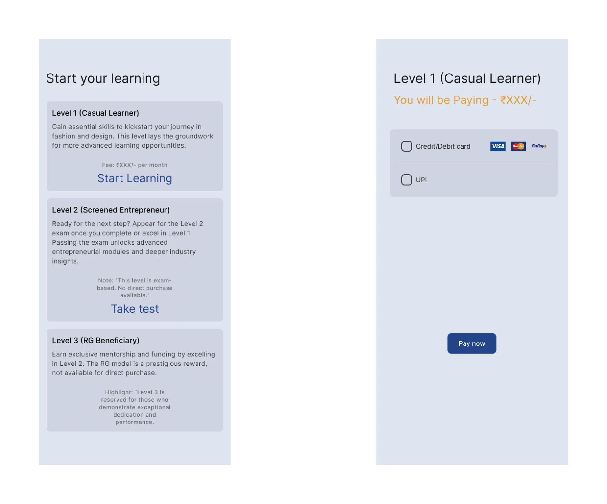
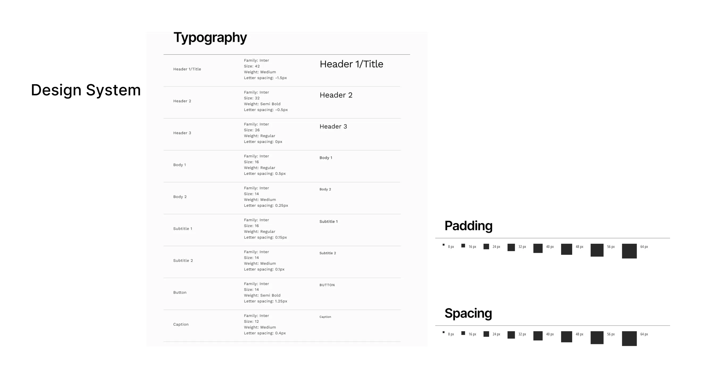
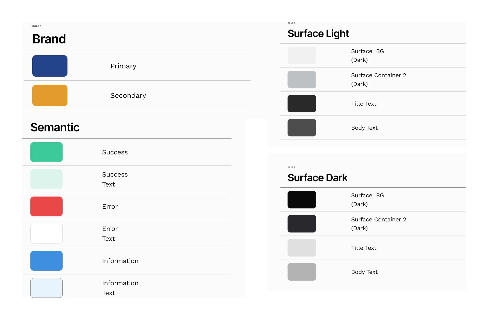

Learnet Skills — F&D Program
A 720-hour programme teaching women to run apparel businesses was losing its learners. Field research across six cities found out why, and shaped a bilingual learning app around the answers.

The learner's journey, from first hearing about the programme to running a business: what she does, where she gets stuck, and what the design does about it at each stage.
The Problem
Learnet Skills ran a Fashion & Design (F&D) programme for women entrepreneurs in India's apparel sector: 720 hours of training across six centres. Despite strong intent, the programme struggled. English-only materials locked out most participants, the curriculum felt disconnected from local market needs, and dropout was high.
I was brought in as a consultant to diagnose the gaps and design a solution.
"If the materials had Hindi explanations, I would understand better." — participant
Research
A mixed-methods study across Delhi, Patna, Muzaffarpur, Bettiah, Sasaram and Kolkata: a bilingual English–Hindi survey of 157 participants covering curriculum, engagement and assessment, 22 in-depth interviews with participants, and interviews with six trainers. Three problem clusters emerged: language and curriculum accessibility, engagement and dropout, and the complete absence of a standardised way to evaluate progress.

Struggling with English ranged from under 40% in Kolkata to nearly 90% in Bettiah. The same centres most wanted a localised curriculum.
Key findings
68% of participants reported significant challenges with English-only materials. 45% wanted more advanced, specialised content, and 56% felt the curriculum didn't justify their time. Every respondent pointed to the lack of any meaningful evaluation, and every trainer was dissatisfied with the curriculum. Dropout was driven by seasonal work, family responsibilities, money, and rigid offline-only delivery.

What kept women away, by centre: money, family and the season. The seasonal pull of work was strongest in Patna and Sasaram.

Dropout ran near 40% in the smaller centres, against 20–25% in Delhi and Kolkata.
Who we designed for
The synthesis produced one composite persona: a woman in her late thirties in Patna, a homemaker who tailors part-time, earning around ₹2 lakh a year. She has the skill and the ambition to grow, but not English, not a fixed schedule, and not a way to know whether she is improving.
The Solution
A multilingual mobile learning platform with a tiered programme structure. Three solutions were designed in parallel: a language and curriculum accessibility layer, a hybrid attendance model to address dropout, and a standardised evaluation and screening framework.
The platform supports English and Hindi, with progressive levels (casual learner → screened entrepreneur → returnable-grant beneficiary), flexible scheduling, and a centralised evaluation system.

The sitemap. Language is chosen right after the splash screen, before sign-up, so nobody meets an English-only form.

Three levels, each earned. Level 2 needs a test; Level 3 carries a returnable grant.
Design System
A full component library for the mobile app: Inter as the sole typeface (legibility over personality for a non-English audience), a blue and amber primary and secondary palette, light and dark surfaces, and spacing tokens on an 8px base unit.


Type scale, spacing, and colour tokens: brand, semantic, and surfaces for light and dark.
Outcome
The design was completed on my end: research, design system, prototype and documentation. The project was cancelled by the client due to funding constraints, not design quality. The work represents a full UX consulting engagement from problem definition through to a shippable prototype.